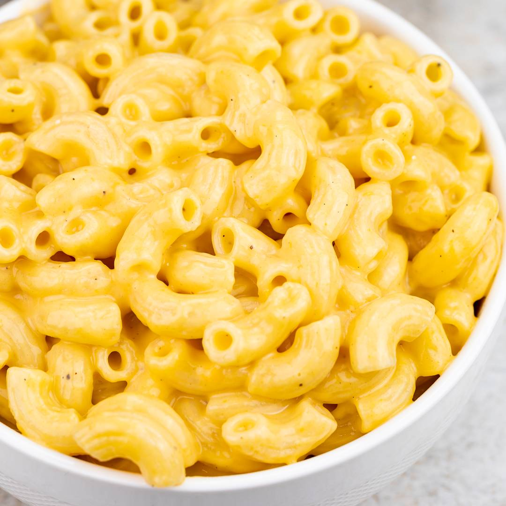
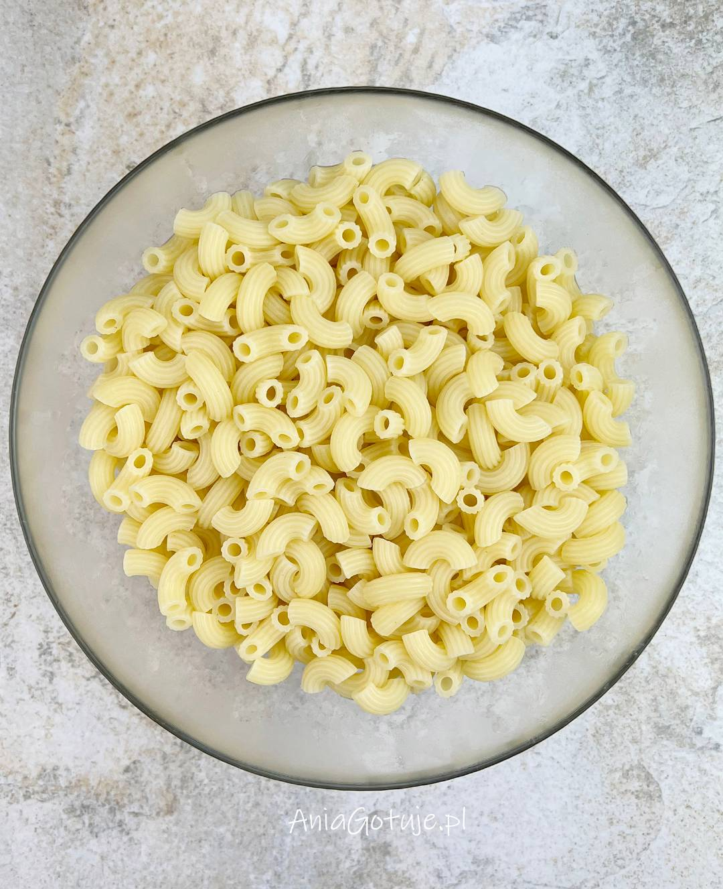
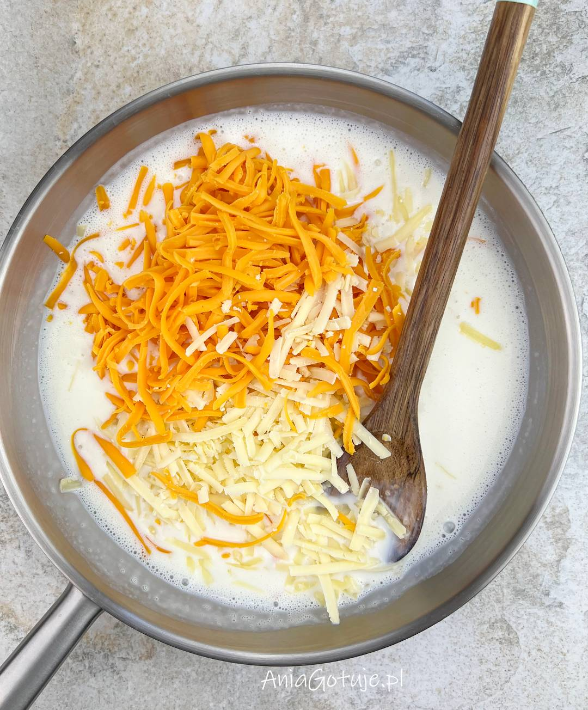
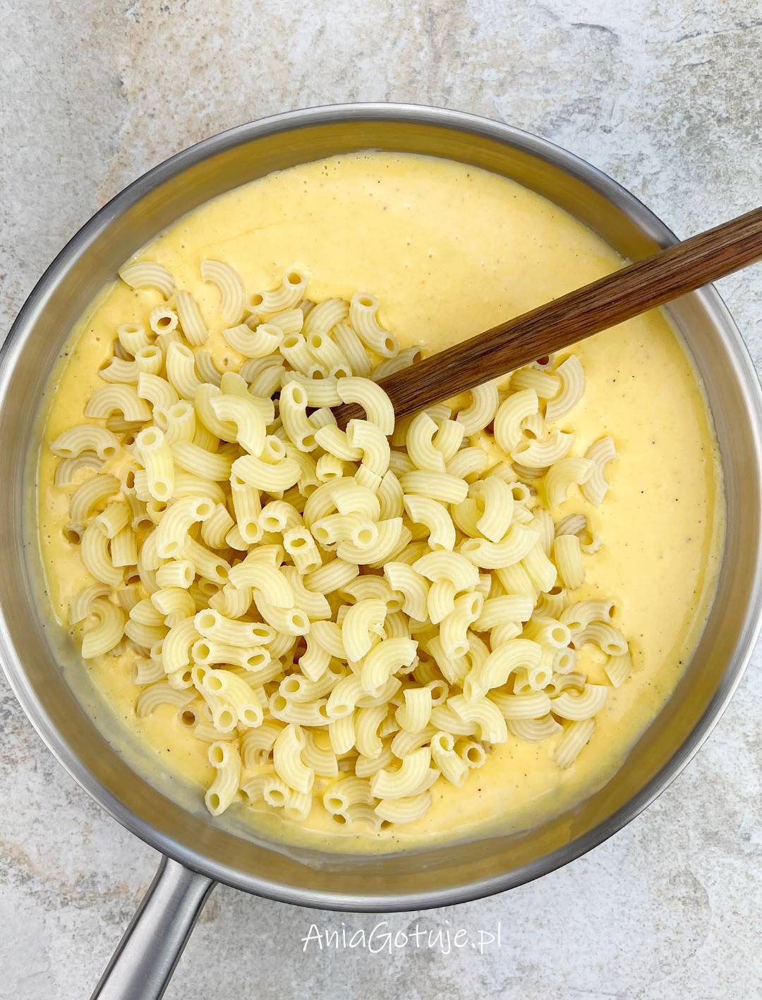

Przepis na Twój głód!
Składniki:

Na patelni rozpuść masło (na średnim ogniu może być). Zmniejsz ogień na mały (zrobi się wtedy dużo mniej grudek) i wsyp mąkę. Mieszaj dopóki składniki się nie zmieszają (wszelakie grudki możesz rozdziabdziać łyżką). Wlej mleko i poczekaj (mieszając co jakiś czas) aż sosik zgęstnieje. Możesz zwiększyć lekko ogień, aby mleko szybciej zgęstniało, ale nie przesadź.

To jest idealny moment aby dodać pieprz. Ciężko przesadzić, więc możesz dawać ile chcesz, ale pamiętaj, że ma go być sporo (nawet jak nie chcesz). Wymieszaj i dodaj sera.

Mieszaj aż ser się rozpuści tworząc kremowy sosik i dodaj (odcedzony!) makaron. Wymieszaj i chwilę grzej jeszcze, aby makaron przesiąkł sosikiem.
